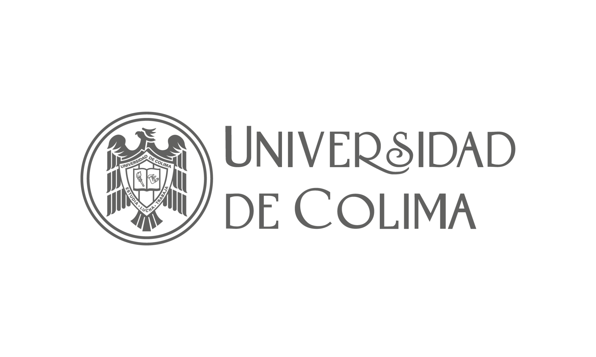

ACCESO UNIVERSAL AL CONOCIMIENTO · PARTICIPACIÓN GRATUITA
2º Seminario de
Turismo y Gastronomía
Inteligencia Artificial y Agenda Digital para la transformación del turismo y la gastronomía
9 NOV – 11 DIC 2026 · VIRTUAL · TALLERES DE 2 HORAS
CONOCE LA CONVOCATORIA PARA TALLERISTAS ↗Acceso Universal Gratuito al Conocimiento
Un espacio abierto y sin costo para aprender, compartir herramientas y fortalecer capacidades en turismo y gastronomía mediante talleres prácticos.
Aprender, aplicar y compartir. Formación práctica para estudiantes, docentes, investigadores y profesionales del turismo y la gastronomía. Las actividades se orientan al desarrollo de habilidades aplicables.
ASISTENTES · REGISTRO DEL 26 OCT AL 6 NOV
Instituciones y vinculación académica

ICEA

AMIT

Universidad de Colima

Tecnológico Superior de Jalisco